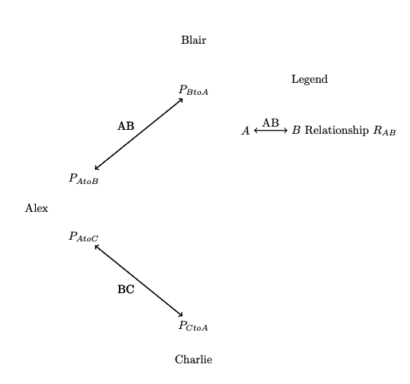
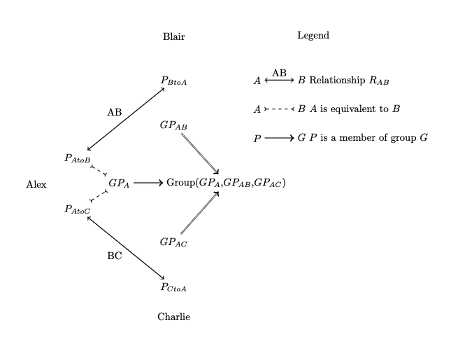

Communicator: a protocol for durable, consensual conversations
Problem
Messaging today has a fundamental architectural problem in that we overload addresses (e.g. phone numbers or email addresses) as identity. This unexpectedly fractures conversations across different transport mediums, and when people change addresses. People have to manually unify conversations across addresses by maintaining a contacts database that maps people to their many addresses. Because addresses convey identify, it exposes metadata in transit about who is talking to each other.
Messaging also has a conceptual problem in that we assume, implicitly if not explicitly, that a person has one identity in any system. From those identities, we derive the concept of messages by directing data from one identity to some set of recipient identities, and we can then collect messages into conversations by organizing individual messages in relation to each other, or by the set of participating identities.
This construction leads to an architectural default that anyone can message anyone else, enabing spam and harassment, as it is costlier for a victim to change addresses than for an attacker to evade sender-identity blocking. In turn, this incentivizes systems to be hostile to using multiple identities. There is no architectural distinction between a solicited and unsolicited message, so systems rely on data about who we have messaged, and who we know (contacts databases) to infer the notion of a consensual relationship.
The Communicator architecture addresses these problems by making a relationship between two people the core concept, and decoupling identity at the application layer, from the addresses used for transport.
Protocol
The Communicator architecture is a messaging protocol that enables people to asynchronously create relationships and exchange messages in those relationships. It extends the core idea of Double Ratchet key management - that two parties protect their communications with shared secrets that are updated with each message exchange - to the addresses that they use to deliver those messages to each other.
Two parties Alex and Blair consensually create a Communicator relationship by exchanging data that allows them to create an authenticated encryption session, and transport messages in that session with each other. This dynamic state that allows Alex and Blair to securely exchange messages is stored in a data structure we call a Particle, to reflect the intuition that Alex and Blair each have a corresponding data structure, entangled through message exchange.
Continue existing conversations
Once Alex and Blair have established a Communicator relationship, they can use it to send messages in the following way:
Alex and Blair each enlist the help of multiple, persistently online services to perform the asymmetric roles of sending and receiving messages, each acting as one party's agent. Alex's state (Particle) for their relationship with Blair contains information about Blair's receiving service agents, and addresses for Blair at each of those receiving services.
When Alex has a message to send to Blair, Alex attaches to the plaintext any updates to their Particle state (e.g. updates to Alex's receiving services or addresses), and encrypts the message to Blair using the agreed-upon key schedule.
To transmit this ciphertext, Alex chooses one of their sending services and one of Blair's receiving services. Alex can then route the message by presenting Alex's chosen sending service:
- The message ciphertext
- A URI for the chosen receiving service
- an address for Blair at that receiving service
The sending service does not need to know Blair's address, so Alex encrypts it with a public key published by the Receiving Service.
Start new relationships
Initializing a Communicator relationship requires a bidirectional exchange of keys and addresses. In the simplest manner, Alex and Blair may simply exchange these directly between their devices through a local, peer to peer transport such as Bluetooth.
In many cases, Alex and Blair will rely on a persistently online Directory Service to broker an asynchronous, remote exchange.
Brokered Directory Service
The most full-featured directory service can vend keys (long-term identity key and prekeys - call this a KeyPackage) and addresses for names within a namespace they assert authority over.
This architecture resembles the deployment of most end to end encrypted messaging services today (Signal, iMessage, WhatsApp).
The directory service in this role grants permission to contact, and may subject this permission to rules within its own namespace.
Attesting Directory Service
Directory services can also attest to bindings of identity (keys) with names in their namespace without granting permission to contact by issuing addresses. This is useful for establishing trust for relationships established through an intermediary - either an insecure medium, or via a person to person introduction.

Considerations
This architecture is alike SMTP in that senders and recipients make independent choices of agents for sending and receiving messages, analogously to mail submission agents and mail delivery agents. Unlike SMTP, these agents only handle ciphertexts, and clients are responsible for storage of plaintext messages. They may choose to enlist the aid of additional services to help synchronize this storage across devices, or provide recovery in case of device loss.
Authentication
Who is at the other end of a relationship?
In the Communicator Architecture, authentication of the other party is rooted in the formation of the relationship, and may be supplemented by later attestations with other identities or sources of identity, such as a key directory
How did this relationship start?
A relationship is formed by an initiating party Ira, for a recipient party Reed:
- Ira generates an identity key (along with other key material), addresses, and sends them as a relationship invitation to Reed.
- Reed uses this data to send an initial message to Ira. 1
Ira and Reed's authentication of the other party is rooted in how these first messages are transmitted and what parties are involved.
- Direct Exchange
- Suppose Ira and Reed have an existing means of secure bidirectional data exchange. Ira sends a relationship invitation to Reed; Reed sends their identity public key in response over this channel, and the initial message over the Communicator architecture. In doing so, the trust in each other's identity is initially equivalent to their trust in this bidirectional channel.2
- Introduction by an intermediary
- Ira may allow an intermediary server \(S\) to make introductions for them at the server's discretion. Ira can upload an identity public key, prekey packages, and address packages (or give the server a way to diversify addresses). The server can then vend the relationship invitation message at its discretion, asserting some identity for Ira. A user Reed who obtains a relationship invitation in this way knows they are communicating with an entity that \(S\) asserts is Ira. Ira, though, only knows that it Reed is someone who found them through \(S\). Reed may send some additional information about their identity - e.g. that their identity public key is registered on \(S\) for some identity \(R\).
- If both Ira and Reed use identities registered with \(S\), this resembles the authentication for deployed telephony-indexed E2EE messaging systems
- This also allows for relationships with asymmetrical trust. \(S\) may be operated by a newspaper, through which Ira may solicit tips. Reed may ask \(S\) for an introduction to Ira, without initially revealing identity information about themselves, but is able to place some trust in \(S\) as the entity vouching for Ira's identity.
- If Sam has a relationship with Ira and Reed, Sam can introduce them. Ira and Reed initially only know each other through Sam (and must assume that Sam may have MITM'd this relationship), until they have otherwise verified each other's identity
- Ira may allow an intermediary server \(S\) to make introductions for them at the server's discretion. Ira can upload an identity public key, prekey packages, and address packages (or give the server a way to diversify addresses). The server can then vend the relationship invitation message at its discretion, asserting some identity for Ira. A user Reed who obtains a relationship invitation in this way knows they are communicating with an entity that \(S\) asserts is Ira. Ira, though, only knows that it Reed is someone who found them through \(S\). Reed may send some additional information about their identity - e.g. that their identity public key is registered on \(S\) for some identity \(R\).
Additional sources of Authentication
- Verification
- Ira and Reed may verify their identity public keys through a trusted out of band channel
- Association with other identities
- Participants may use the attestation operations to prove associations with identities. For example, Ira and Reed, who started a relationship with an in-person exchange, may also attest equivalence to identities in a public key directory.
To use X3DH as an example, the relationship invitation contains Ira's identity key, prekeys and addresses. Reed's initial message corresponds to the X3DH initial message, transmitted through the Communicator architecture of sending and receiving agents
Operating systems are increasingly restrictive (with good reason) of mobile apps' access to low-level local networking protocols that would enable bidirectional exchange of data. A sketch of how one might implement this exchange, akin to the CTAP2 secure channel between an authenticator and client:
- Ira uploads the relationship message to a server, and generates a QR code with a url to fetch the message, and a hash of the message
- Reed scans the QR code, fetches the message, and verifies the hash over the message.
- Concurrently, Reed broadcasts a BLE advertisement of a new Identity public key generated for this relationship
- Reed sends an initial message in reply over the Communicator architecture
Durability
People expect their conversations to be resilient against the loss of a device.
There are two aspects of recovery:
- Identities and addresses of people I was conversing with
- This data is typically backed up on its own as a contacts database, or implicitly with message history
- The ability to communicate with identities I previously used
Today, the identities I use are wholly under the control of the services I use. This is very helpful if I lose my device or forget my passwords, and convince these services to give me control of the same identity on a new device. It's somewhat less helpful if an attacker poses as me to convince the service to "recover" access to those identities.
It is long-standing wisdom that people cannot reliably protect secrets; the diversity of crypto wallets, their failure modes, and people's choices of which models they are comfortable with, are illustrative examples of the frontiers of people's ability to protect secret data that they use.
But to surrender control of our identities wholly to services overlooks the broad availability of data recovery options now deployed that place limited or shared trust in other parties to recover their data. There are increasingly many ways for people to back up their data without completely trusting the backup entity with access to their data.
Communicator Relationship Recovery
Because identity in the communicator architecture is a subordinate concept to a relationship, we are primarily concerned with the recovery of a relationship between two parties Alex and Blair, from data loss, compromise of private data, or network denial of service.
The Communicator Architecture is organized on the principle that two communicants Alex and Blair are the primary agents for recovering their relationship. They may (and likely should) enlist the help of a third party - this is especially helpful against compromise of device secrets - but the third party provides only an alternative, not authoritative claim of anyone's identity.
What does that look like in practice?
- Alex's sole device is destroyed. They had backed up their Particle data to a secure store such as iCloud Keychain. They use a secret only they know (their previous device passcode) to restore their Particle data. Alex is able to recover the relationship with only the help of their secure data recovery service. This recovery does not need Blair's cooperation, nor does this change need to be visible to Blair.
- Alex used the mechanism described in recovery to coordinate backup identities with Blair, stored with a recovery service \(R\) in plaintext
- Alex's device is destroyed and they forget their recovery secret. They authenticate with \(R\), make use of the backed-up identity, and recover their relationship with Blair. The introduction of a third party that was able to impersonate Alex has degraded Blair's authentication of Alex; this degradation must be transparent to Blair, and is accomplished though the use of the backup identity.
- From Blair's point of view, there is the Alex identity \(A\)they were talking to, and the recovery identity \(A'\). Both may be in use at the same time - e.g. if either Alex's device, or Alex's backup are compromised.
- Today, \(A'\) replaces \(A\). Blair has no way to resume an established messaging session with \(A\), and services provide safeguards or transparency against a malicious replacement of identity, advising users to reestablish trust after such a transition.
- The Communicator architecture does not presume that either of the competing claims to Alex's identity, \(A\) or \(A'\) should be trusted by default. Both channels are available to Blair to resolve.
Permission to Contact
Problem
Existing approaches to mitigating unwanted communications in architectures that default to accepting all messages, rely on collecting and processing message contents or metadata, or push work on individuals to filter incoming messages, sender identities, and message requests.
Design
The Communicator architecture separates communications in an existing relationship, from mechanisms of starting new relationships. This allows the former to minimize transport metadata, while allowing people to control when they start new relationships.
People already start relationships (or invite them) when they give out an email address, or post it publicly and solicit messages. The Communicator architecture fulfills these same transactions, in the following ways:
- Direct exchange
- In the way that people today give their email address to a specific person or business, they can instead send an identity public key, and an initial set of addresses as a way of starting a new relationship.
- This can be done over a local transport (Bluetooth or NFC), through a secure channel (signing up for an account on a website), or over an insecure legacy transport.
- Introduction
- Someone I already have a relationship with can introduce me to a third person. Discussed further in Introduction
- I can entrust a directory service to broker introductions according to some rules (members of the same organization, degrees of separation in a social graph, etc)
- This may be an open solicitation to new conversations. A newspaper might vouch for the identity of its journalists by operating a directory service, and provide a way to start new conversations with them.
Bridging
People already have many existing conversations, in many mediums, and it will be important to bridge conversations into this new architecture. This is typically why messaging architectures default to accepting any incoming messages. Bridging techniques are outside the scope of this document.
Interoperability
People use diverse software and services, and it is important to allow people make independent choices about the software agents they use to send and receive messages - just as they do with email and telephony. The key points of interoperability in this architecture are:
- Between senders' and recipients' client software that encrypts and decrypts messages under this architecture and maintain syncronized Particle state.
- Between Sending and Receiving agents to transmit ciphertexts for a destination address
- Between client software and Sending and Receiving Agents
- This allows one client to use multiple sending and receiving agents to provide reliability and privacy
Relationships
Relationships, not identities, are the fundamental unit of this architecture. Identities are contextual to each relationship, and users can choose how each of those contextual relationships relate to fixed or public identies, such as those published in directories.
A relationship \(R\) between Alex and Blair is a pair of data structures \(P_a\) and \(P_b\), stored by Alex and Blair respectively, that represent each end (role) of the relationship, and contain the data needed to communicate with the other party. Let’s call \(P_a\) and \(P_b\) Particles, to reflect the intuition that they are entangled (through message exchange) and reflect shared state.
\(P_a\) consists of:
- The remote party's preferred presentation:
- A string representing a preferred name
- Optionally, pronouns
- Optionally, a profile picture
- An Identity Public Key (\(IPK_B\)) for \(P_b\)
- Optionally, an external resource that attests to a binding between \(IPK_B\) and some external identity (e.g. a scoped username like an email address)
- An Identity private key for \(Pa\) corresponding to the \(IPK_A\)held by \(P_b\)
- Message security state variables
- These would be Double Ratchet chain keys for 1:1 conversations
- A list of receiver's service agents (minimum 2), that each contains
- A URL representing the service identity and a means to obtain the service's configuration:
- E.g.
example.com/.well-known/Communicator.json(analogous to an MX record)
- E.g.
- A long-term delivery address for \(P_b\)(this facilitates recovery)
- With a guaranteed valid until date
- An ephemeral delivery address for \(P_b\)
- With a short expiry date
- A URL representing the service identity and a means to obtain the service's configuration:
Groups
A group is a set of people who want to talk amongst themselves. Whereas the Particle data structure for a 1:1 relationship containes keys and addresses for person at the other end of the relationship, the Group Particle data structure contains the same data (keys and addresses) for all other participants. For a Group \(G\), the member \(G_c\) would have the following data structure
- (optional) A name for the group
- (optional) A profile picture for the group
- For each other group member \(GP_i\):
- The group member's preferred presentation:
- A string representing a preferred name
- Optionally, pronouns
- Optionally, a profile picture
- An Identity Public Key (\(IPK_i\))
- Optionally, an external resource that attests to a link between \(IPK_i\) and some external identity (e.g. a scoped username like an email address)
- A list of receiver's service agents (minimum 2), that each contains
- A URL representing the service identity and a means to obtain the service's configuration:
- E.g.
example.com/.well-known/Communicator.json(analogous to an MX record)
- E.g.
- A long-term delivery address for \(P_b\)(this facilitates recovery)
- With a guaranteed valid until date
- An ephemeral delivery address for \(P_b\)
- With a short expiry date
- A URL representing the service identity and a means to obtain the service's configuration:
- The group member's preferred presentation:
- An Identity private key for \(IPK_c\) corresponding to the \(IPK_i\) held by other group members
- A set of associations of \(IPK_c\) with other related Particles (relationships)defined by cryptographic attestation - see [Identity].
- An Identity private key for \(GP_c\) corresponding to the \(IPK_c\) held by other members of the group
- Message Security state variables
- discussed later in this document
This is sufficient for a group to talk amongst themselves - agreement with other participants on who (defined by Identity Public Keys) is a member of this group, and how to deliver messages to them.
Group Management
There is a range of approaches to handle consistenty of group membership and message ordering; here are a few examples:
Fully Decentralized
Each message has a set of recipients. Membership is implicitly changed by changing the recipient list for new messsages. Messages are not fully ordered - messages can be relatively ordered to indicate a reply. Email and iMessage function in this way (as do legacy Signal groups). Race conditions may cause groups (and conversations) to fork.
Centralized Membership, Decentralized message delivery
Members of a group agree on an authoritative source of group membership (and other group metadata like a name), but do not rely on an external resource (like a server) to adjudicate consistent message ordering. Signal's private groups function in this way.
Centralized Membership and Message
Chat rooms, mailing lists, and Slack, are examples of this. There is a single source of truth for message ordering - participants compete to edit a collaborative, (mostly) append-only document that is the room's message transcript. The room (and implicitly, the room operator) is the fundamental entity, not the set of participants that make up the group.
These different approaches are suitable, roughly speaking, for groups of increasing size. The Communicator architecture has the following two approaches to group management:
Lightweight Groups
These groups operate in the fully decentralized way. The Message security state is a pairwise double ratchet state for each member of the group.
Coordinated Groups
These groups leverage a server agent to store the group's state (e.g. membership), and as the single Sender's Service Agent for the entire group. This allows it to perform the message ordering required by Message Layer Security. Here, the message security will be provided by MLS, not pairwise Double Ratchet.
Coordinated groups are robust against failure or denial of service by the server agent by falling back to a lightweight group, and can nominate another server agent to take over.
The Application layer can choose between these architectures when forming a group, and can add coordination to a lightweight group at anytime.
Introductions
How do we form groups when we don't know if the participants can message each other - that is, if they have an established relationship? Introductions provide a powerful primitive for making new relationships and groups.
A personal introduction can be considered equivalent to starting a group of 3. Alex has relationships with Blair and Charlie, and wants to introduce them. Note that Alex has two independent cryptographic identities - Alex as Blair knows them (\(P_{AtoB}\)), and Alex as Charlie knows them(\(P_{AtoC}\))

Alex can introduce Blair and Charlie by starting a group among the three of them:
-
Alex generates a new IPK and addresses for their identity in this group to form a new Particle \(GP_A\)
- Alex sends \(GP_A\) to Blair and Charlie, and attests that \(GP_A\) is equivalent to the cryptographic identities Blair and Charlie already know for Alex - \(P_{A to B}\) and \(P_{A to C}\), respectively.
-
Alex also generates placeholder identities for Blair (\(GP_{AB}\)) and Charlie (\(GP_{AC}\)), and sends the respective public and private keys to Blair and Charlie.
- That is, Alex sends Blair the public key for \(GP_{AC}\) and the private key for \(GP_{AB}\), and likewise for \(AC\).
- This step is required because we do not want to reuse cryptographic identities in different conversations, and allows Alex to asynchronously start a group without relying on Blair and Charlie to generate a new key pair.
-
Alex also generates new long-term addresses for Blair and Charlie, derived from the addresses in AB and AC, and sends them along with the placeholder identities.
-
All three participants now have the necessary info to send each other bidirectional messages.
The state of this group is "Alex has created a group of 3, with placeholders for Blair and Charlie"

Placeholder Identities
Blair can accept this invitation by claiming the placeholder:
- Like Alex, Blair generates a new identity (Particle) for its membership in this group \(GP_B\)
- Blair should attest to Alex that \(GP_B\) is equivalent to the existing identity \(P_{B to A}\).
- In the group, Blair should use the placeholder identity \(GP_{AB}\) to attest that it will be replaced by \(GP_B\).
Note that Charlie does not yet have proof that Blair (\(GP_B\)) is not an alias for Alex, since Charlie only knows Blair through Alex. Charlie and Blair would need additional proofs of identity to establish a basis of trust independent of Alex.
If there is a natural context (e.g. the identities AB and AC were established from identities in the same directory), then Alex may also include that identity binding to identities in that directory in the initial introduction. But there may not be such context. If Alex and Blair exchanged keys in person, Alex doesn't have any additional identity information for Blair to share with Charlie.
If Charlie claims his invitation, then Blair and Charlie can also create a side conversation of their own, producing the final introduction state:

Identities
In this architecture, users will have many contextual identities and, will want to unify or fork those identies and the associated conversations.
Attestations allow people to assert relationships between cryptographic identities for which they hold the private keys. There are two kinds of attestations, with proposed implementations that require security review. Suppose there are identities A and B represented by the public keys \(A_{pk}, B_{pk}\), and corresponding private keys \(A_{sk}, B_{sk}\). Let \(Sign_{sk}(M)\) represent the signature of message \(m\) with private key \(sk\)
- Sequential - B follows A
- Proposal: \(Sign_{B_{sk}}(B_{pk}||Sign_{A_{sk}}(B_{pk}))\)
- Parallel - A is equivalent to B
- Proposal: \(Sign_{A_{sk}}(B_{pk})\ ||\ Sign_{B_{sk}}(A_{pk})\)
We should consider trust to be transmitted directionally in a Sequential relationship, and bidirectionally in a Parallel relationship
- If B follows A
- I can trust B with the union of trust in A and B
- I learn nothing new about trust in B
- If A is equivalent to B
- I can now trust A and B with the union of trust in A and B
Messages from a key B that follows a key A should be merged chronologically with messages from A in a conversation history. Messages from a key B that is equivalent to key A should not be.
These attestations can be used in the following ways:
- Rolling keys over time
- the replacement key should follow the key being replaced
- Linking a new identity to an existing one.
- Alex and Blair met and exchanged keys \(IPK_A\) and \(IPK_B\), but Alex wants to prove they also have a attested identity \(IPK_{A_D}\) from a Directory Server
- Alex should generate a new \(IPK_{A-Merged}\) and present attestations that it follows \(IPK_A\) and \(IPK_{A_D}\)
- Alex and Blair met and exchanged keys \(IPK_A\) and \(IPK_B\), but Alex wants to prove they also have a attested identity \(IPK_{A_D}\) from a Directory Server
- Forking threads
- If Alex wants to fork a conversation they have with Blair across identities \(IPK_A\) and \(IPK_B\), Alex can generate a new identity key \(IPK_{A'}\), and assert an equivalence between \(IPK_A\) and \(IPK_{A'}\). From Blair’s point of view, \(IPK_{A'}\) should be a new thread, inheriting whatever trust they had in \(IPK_A\)
Conflicts
After issuing an attestation that B follows A, clients should delete the private key for A, and sending chain keys derived from A. (They should keep the receiving keys for some period of time). Future messages should be sent with chain keys derived from B.
Still, conflicts can arise if clients receive conflicting attestations that B follows A, and C follows A. These can result from software bugs, a device with outdated state , or compromise of private keys. A device with outdated state can heal its state by reaching consensus with a device with newer state about ordering of keys. E.g. by issuing an attestation that C follows B.
Otherwise, these conflicts must be resolved by the user. There are two cryptographic identities claiming to be Blair, which one is correct? Examples of how this might arise:
- Alex introduces Blair to a backup identity \(A’\) that follows \(A\). The backup service is compromised and an attacker attempts to impersonate Alex using \(A’\). There are now two claims to Alex’s identity.
- The presumption could be that a use of a backup identity A’ while A is active is fraudulent and should be assumed to be malicious. But Alex’s device might have been compromised, and is attempting to restart their relationship from a backup.
- Technology can’t resolve this conflict - Blair has to socially resolve this conflict between the two claims to Alex’s identity, for example, by verifying keys in person
- An external attestation is a way of resolving this conflict.
- It can also be a source of conflict. Blair has a relationship with Alex, and Alex has asserted and equivalence with the public key for @Alex on example.com's Directory Server at a point in time.
- If example.com's Diretory publishes a new public key for \Alex on Twitter, the association is no longer valid, and we have a conflict
- Alex can heal the conflict by issuing an attestation with the new public key
- The conflict may also arise from an account takeover on the external service rather than a compromise of Alex’s device. This conflict also needs to be resolved socially.
Multiple Devices
People often have multiple computing devices, and want to use them to send and receive messages as the same identity. Messaging architectures today, generally model different devices as distinct members of messaging groups, and rely on the application layer to hide each participant's devices.
In a federated architecture, people cannot rely on other parties' software to hide the devices they use, and how they use them. Our messaging architecture should reflect the way that people expect to converse, which is that they present a uniform identity to other parties, regardless of which device they're using.
This is an area for future work, a sketch follows of how this might be implemented:
Constellations of devices emulating a single, ratcheting identity
This assumes users have a set of devices which are running the same client software managing key state, and which can exchange end to end encrypted messages amongst each other. In addition, these devices may also enlist a server to store and synchronize data, protected with keys that are only held by these devices.
Using double ratchet as an example, all of Alex's devices emulate a single ratchet identity by sharing private keys amongst themselves, copying peer devices on messages sent to the remote party, and fanning out incoming messages to all of Alex's devices. This works under ideal conditions, but the concept needs adaptation to be resilient against dropped and delayed messages, and race conditions. Key challenges will be:
- Resolving ratchet conflicts
- If two devices perform a ratchet at the same time, they may fork the ratchet chain.
- Robustness with offline devices
- One edge scenario is that a device sends a message with a ratchet public key, and is immediately destroyed before it can share the ratchet private key with its peers, locking peers out of the conversation.
From the standpoint of a theoretical recipient that receives and processes all messages from each of Alex's devices, these messages contribute to a virtual ratchet state - that may fork into a tree instead of an ordered chain. Each of Alex's devices is aware of a subset of this virtual state, filling in the details as it receives messages from peers and the remote party, or consults their sync service. Each device, acting on the possibly incomplete information, has to decide on actions as it sends and receives messages - e.g. which branch of a forked chain to use.
The failure modes raised above hint at an explicit window of valid ratchet states, representing some depth of leaves of the tree, to ensure devices can send messages without depending on data from their peers. To keep this window small, devices must aggressively prune the tree, and narrow the depth of valid states. The former can be done with agreement on an ordering of states. The latter could be done with an explicit signal to the remote party that a particular DH key is the oldest one that should be honored - e.g. if the corresponding private key has been committed to (end to end encrypted) cloud storage, or been received by N other peer devices.
Recovery
We can use the notion of introduction to provide a recovery mechanism that does not depend on a user secret.
Suppose Alex and Blair have a relationship, based in identity (public keys) \(A\) and \(B\)
When a user Alex enlists a recovery service \(R\) to recover a relationship with Blair, they are effectively asking \(R\) to reintroduce them as a new identity \(A_r\). If this recovery flow is to be resilient against device compromise, then \(A_r\) cannot be known ahead of time (or a device compromise would give the attacker access to \(A_r\) as well).
Preparation
Alex and Blair can pre-arrange recovery in the following way:
- Alex creates a recovery identity key pair \(A_r\), a (long-lived) recovery address(es) \(Addr_A\), and a recovery identifier \(ID_A\) for a key directory \(K_A\), and sends the public key, address, key directory, and recovery identifier to Blair.
- Blair symmetrically generates \(B_r\), \(Addr_B\), \(ID_B\) for \(K_B\), and sends them (excluding the private key) to Alex.
- (Implicitly the public identity key is accompanied by some pre-keys as needed for a key agreement protocol throughout this description)
- Alex can then store the Recovery Particle \(RP_B\) with a trusted party in plaintext:
- Blair's name
- A recovery identity key that Blair has today \(B_r\)
- Recovery Address(es) for Blair \(Addr_B\)
- A way to get a future identity for Blair: \(ID_B\) at \(K_B\)
- The key directory entry that Blair expects to receive messages from: \(ID_A\)
The first exchange limits the exposure of data about Alex and Blair's current communications - only the recipient's name, receiving service agent, and key directory.
Recovery
-
Alex can then recover from compromise or data loss by authenticating with \(R\) to retrieve \(RP_B\), generating a new identity \(A'\), and registering the public key for \(A'\) with \(K_A\) for the identity \(ID_A\).
-
Alex can then compose an initial key agreement message to \(B_r\), from \(A'\) and send it to \(Addr_B\)
-
Blair, on receipt of a message at \(B_r\), can consult \(K_A\) for Alex's new identity public key under the entry for \(ID_A\)
If the key directory also allows the registration of a new address, then \(K_A\) and \(K_B\) can jointly provide recovery from data loss by both parties, as \(ID_A\) and \(ID_B\) effectively form a pre-arranged rendezvous.
Client API
Problem
For Alex and Blair to communicate using different sofware across an interoperable standard, the standard must be stable. This standard should itself support the kinds of payloads that already exist or have been standardized - short texts, longform prose (email), and call invitations.
This is in tension with people's desire to communicate in new and novel ways - for recent examples, with short-form video or ephemeral messages. There are many circumstances where Alex and Blair need to agree on an app to do specific things within the relationship. Innovation in this space has long relied on new apps' access to people's social graphs by granting access to a user's contacts, with corresponding privacy harms and abuses.
Design
We can fulfill this desire in a more privacy-preserving way by exposing on-device APIs that allows people to use new apps with their existing social graph, while abstracting away the implementation of message transmission. Examples of use cases and privacy-preserving API's:
- Custom messaging clients
- People may want to use different user interfaces (possibly at the same time) to send and receive messages, just as people want to make an independent choice of mail app from their mail service. A new messaging interface app can request permission to access a person's messaging database, and to an API to send messages. This doesn't expose keys or addresses, and operating systems can help prevent exfiltration of message plaintext with sandboxing, just as they do for app extensions that handle sensitive data, such as keyboard extensions.
- Novel Payloads
-
Lots of media types that people want to exchange are split across multiple services - e.g. payments, ephemeral messages, or call invitations. These use cases can be accommodated with API's that allow these apps to
- register for a payload type
- supply a payload within the hosting app's compose window
- This payload can include a fallback message indicating what app can be used to display the payload
- invoke a compose window from their app
- send messages programatically in relationships that have already been used with the app.
-
In the B2C case, this could include 2FA notifications. For example, I sign up for an account on a bank's website, using a Communicator identity. This Communicator identity lets the bank send me short (alerts) and long (promotional mail) text messages. I can also allow the bank's app to process app-specific payloads, for example 2FA requests that I must authorize in their app after authenticating.
-
Reference Implementations
The following sections offer basic implementations of the required components. They assume an authentication service that handles identifiable data (e.g. payment) and allows people to reclaim their account by presenting external credentals (e.g. proof of identification or of payment method).
This reference implementation of the Directory Service consumes identifiable authentication tokens, so that people can reset their directory entries by appeal to toe the authentication service.
The receiving and sending services, however, separate the identity used for authentication, from usage metadata by the use of unlinkable tokens (e.g. Privacy Pass). The authentication service vends tokens, rate-limiting their issuance to prevent abuse. Those tokens can be redeemed with the operational servers.
Directory Service
This Directory Service asserts authority over names \(n\) within their namespace \(N\). This namespace could represent members of an organization with a defined membership (e.g. a school or business), or could be a social media context where people create avatars and connect to other members to have conversations (e.g. a matchmaking service - i.e. a dating app)
After authentiating as a user \(n\), a person can perform the following operations with the Directory Service:
- register an identity public key for \(n\)
- replace the existing identity public key for \(n\)
- optionally, provide proof that the user still has posession of the previous identity private key by signing the new identity public key.
- query for the quantity of pre-key and address packages available on the server
- upload additional pre-key and address material
The Directory Service also provides the following services:
- Query for the identity public key for \(n\)
- Request permission to contact \(n\)
- The Directory service can return an address
- The directory service may choose to authenticate such requests. E.g. the social graph of dating services are not completely open, but are deliberately restricted by the operator to restrict choice.
The directory service should provide proof of its honesty by implementing key transparency.
Sender's Service Agent
The function of the Sender's Service Agent (SSA) is to act as the sender's online agent for storing data - either transiently (queueing messages, storing message attachments) or persistently (group state). SSA's should provide technical assurances against reidentifying metadata by not handling identifiable information about the sender, and using unlinkable tokens to authorize use of the service and rate-limit resource usage.
Message Queueing
In the message transmission path, the SSA is an intermediary between a person's computing devices, and the recipient's service agent, providing reliability and anonymity.
Attachment Storage
The QSS also serves as the sender's agent for storing encrypted ciphertexts that are too large to fit in the message protocol, for later retrieval by the recipient or their agent.
Group Coordination
As discussed in Groups, it can be helpful for for stability and coherence for groups to have consistent state and ordering of messages. MLS requires, for example, a Delivery Service provide consistent ordering of messages. This function can be provided by a sender's service.
Typically, on group creation, the group creator will nominate their sender's service agent as the service agent for the group they create.
Receiver's Service Agent
The Receiver's Service Agent (RSA) helps recipients protect the privacy of their relationships by providing a supply of addresses at which they can receive messages.
Receiving services must also help senders hide addresses from their sending service, by publishing a public encryption key so that senders can encrypt addresses to the receiving service.
Our reference RSA provides the following functionality to clients who present unlinkable authorization tokens:
- Provide a supply of seed addresses
- Allow clients to derive new addresses from those seed addresses without interacting with the RSA
- Allow clients to query for messages delvered to those seed addresses
- Allow clients to register for immediate notifications for newly received messsages (e.g. with a push token or by opening a WebSocket)
The reference RSA provides address derivation by use of randomized public key encryption.
The RSA also, as specified in Interoperability, allows senders to encrypt addresses to the RSA so that senders can produce derived addresses indistinguishible to the Sending service without receiving new addresses from the recipient.
Analysis and alternative approaches
The RSA will receive messages with addresses that have two layers of randomized encryption applied, to prevent linking messages to a particular sender or recipient. The outer layer renders addresses indistinguishible to sending services. The inner layer renders addresses indistinguishible to senders so that e.g., senders cannot compare addresses to determine if they are talking to the same party.
This double encryption produces somewhat large addresses, which is an opportunity for optimization. But fundamentally, we want to have a large, sparse address space so that users can use arbitrarily many addresses, while making it difficult to enumerate valid addresses.
The RSA holds the private keys to decrypt these addresses and reveal the seed address, as it must to resolve indistinguishible addresses to a particular recipient. The primary privacy protection is that unlinkable tokens separate the recipient from any identifiers the client presented to the Authorization Service.
WebSocket connections may be disassociated from the user's IP address by the use of a Multi-Party Relay (MPR) such as iCloud Private Relay or INVISV Relay1. If users wish to receive real-time notifications for messages by registering a platform push token, these are pseudonymous identifiers that may be linked back to a user with the aid of the platform.
RSA's may take additional steps to reduce their knowledge of message metadata, possibly with some efficiency tradeoff. For example, by loosening the constraint that they know the specific user each address maps to, to associating each adddress with a paging set. It may notify a set of clients, who can decide if they wish to fetch the message contents, e.g. through an MPR.
Importantly, these additional steps do not require any manual intervention from senders. Because addresses in this architecture are defined by recipients and are automatically updated when senders receive new addresss from recipients, people can change RSA's and seamlessly transition between multiple RSA's.
1: INVISV Relay: Providing Multi-Hop Privacy for All
Related Work
This sketch draws on a wealth of prior work that has has gotten us where we are today. This architecture draws inspiration from (and uses as a security primitive) ratcheting message security keys from Double Ratchet and MLS.
Message transmission architecture has inspiration from onion routing, and is adapted for the different nature of store and forward messaging from client-server sessions. Address diversification is structurally similar to onion routing, and I expect rate limiting between receiving and sending services will draw on operational experience from Tor nodes as well as email domain reputation heuristics.
Indeed, a conceptual ancestor to onion routing is David Chaum’s proposal for anonymous communication using mixnets: https://dl.acm.org/doi/pdf/10.1145/358549.358563
I’ve also found helpful (if time-shifted) discussion from Trevor Perrin’s Modern Messaging mailing list archives and the many active participants there who have raised ideas and feedback relevant to different aspects of this sketch. The Messaging Archives